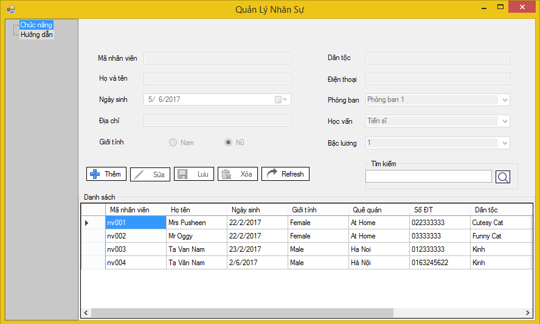
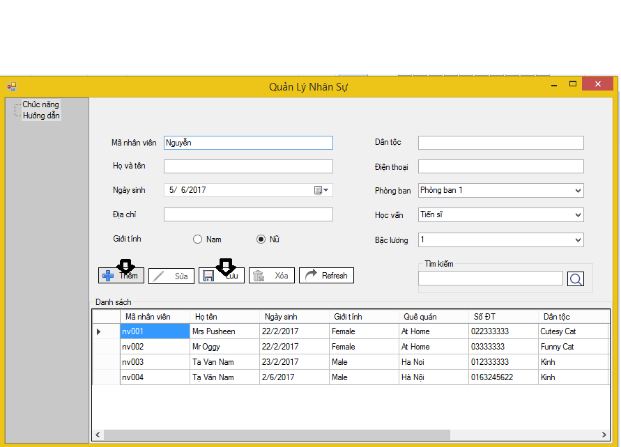
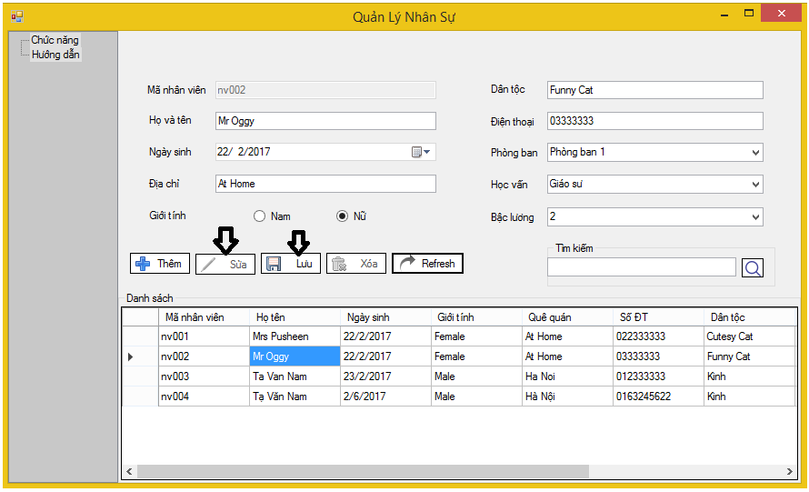
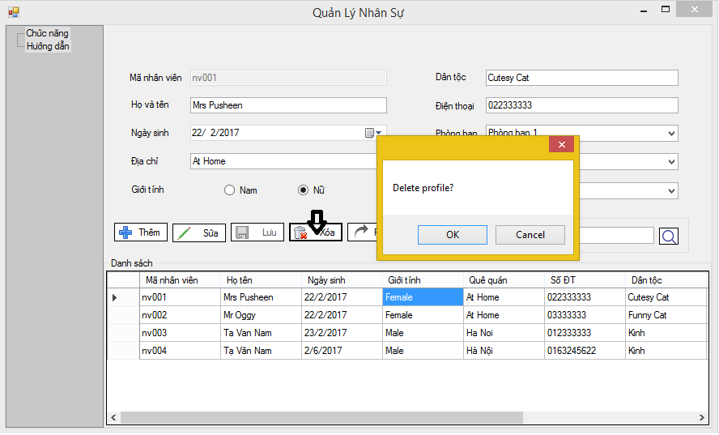
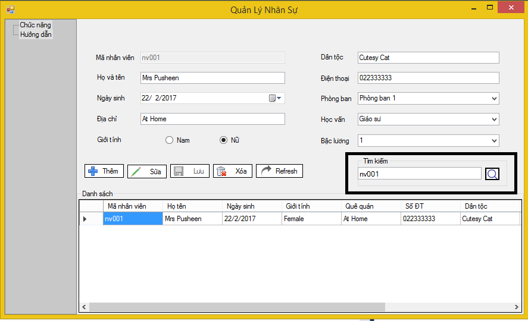

Phần mềm quản lý nhân sự là một phần mềm đơn giản, hữu ích và hiệu quả để công ty có thể quản lý nhân sự
Giao diện màn hình chính của phần mềm khá đơn giản, và dễ sử dụng, được kết hợp nhiều chức năng với nhau.
Để thêm một nhân viên mới. Đầu tiên người sử dụng cần click vào nút "Thêm", sau đó nhập đầy đủ thông tin cần thiết và cuối cùng click "Lưu" để hoàn tất thao tác thêm mới người nhân viên
Để sửa thông tin một nhân viên, người sử dụng cần chọn nhân viên cần sửa, sau đó click nút "Sửa", tiếp theo, người sử dụng nhập thông tin cần sửa vào, và đừng quên nhấn nút "Lưu" để hoàn tất thao tác sửa thông tin nhân viên
Và một thao tác không thể thiếu đó là xóa nhân sự, để xóa 1 nhân viên nào đó, người sử dụng chọn nhân viên đó và click "Xóa", giao diện sẽ hiện ra cửa sổ thông báo cho người dùng hỏi xóa hay không.
Phần mềm cũng cung cấp một tính năng tìm kiếm, giúp người sử dụng dễ dàng quản lý thông tin nhân viên của mình
điền thông tin cần tìm vào ô và click "Tìm kiếm", thông tin bạn cần sẽ ở bên dưới
